Lo justo para empezar, con dibujos. Si quieres saber qué hace cada botón, en cualquier pantalla tienes el «?» de arriba, y el manual lo cuenta todo.
De cero a la primera tarde de estudio, en este orden. Puedes saltarte lo que no necesites.
Se instala desde el navegador, sin tienda de aplicaciones. Queda en tu pantalla de inicio y se abre aunque no haya red.
No es obligatorio: también puedes seguir usándola en la web.
La cuenta guarda a tu familia. Son dos pasos: cuatro datos tuyos y, después, el nombre, el curso y la edad de tu hijo.
¿Solo quieres verla? «Probar con la familia de ejemplo» te deja entrar con tres niños inventados.
Es lo que más se usa. Nexi lee la foto, busca el tema y te lleva a la explicación.
Con la cuenta en el servidor hay un tope de fotos al día por familia (1 en el plan gratuito y hasta 10 en el plan Familia): «Capturar» te dice cuántas llevas. La foto no se guarda.
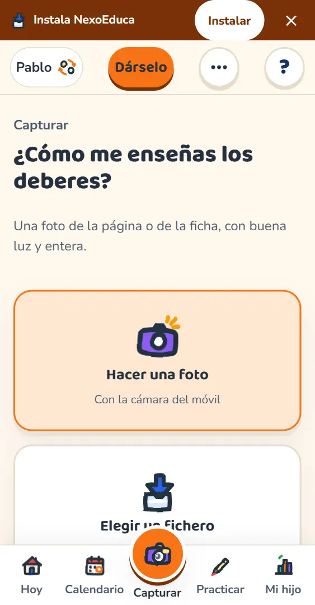
La explicación está pensada para ti, el adulto: cómo contárselo paso a paso y cuál es el error de siempre.
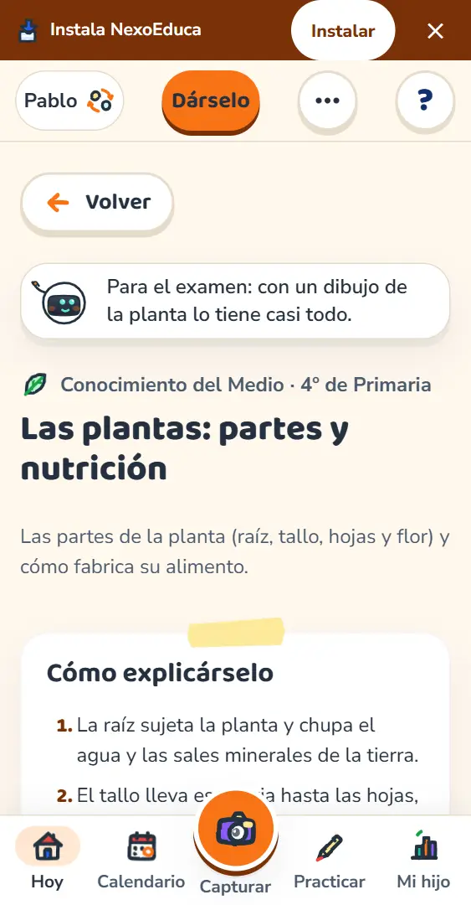
Tú decides qué repasa o qué adelanta. Le sale en su nevera con un mensaje tuyo.
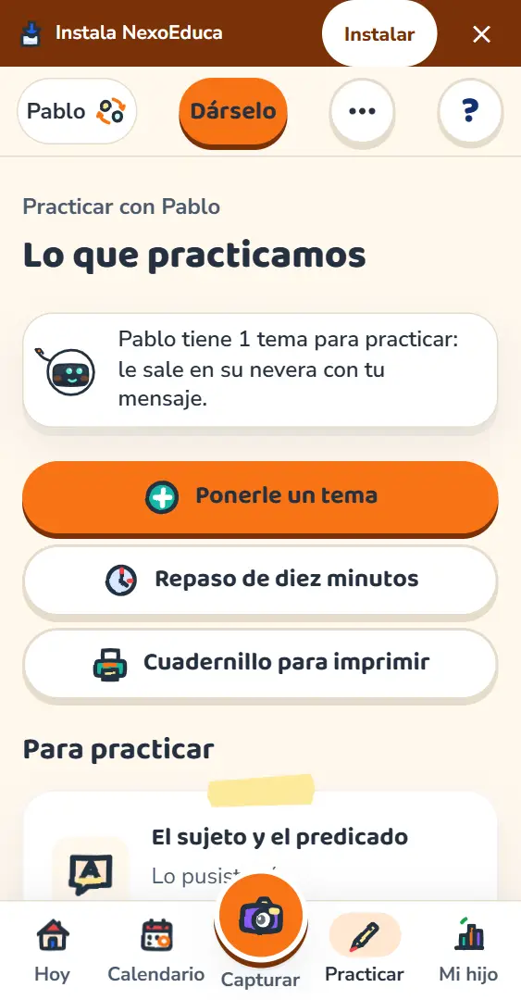
Apuntas el examen y yo reparto el repaso en las tardes de antes, para que no tengas que planificar nada.
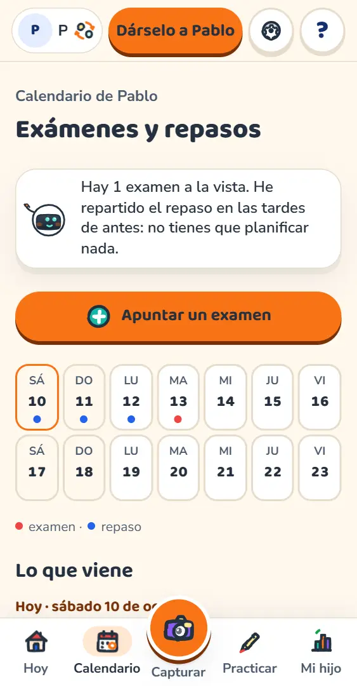
Si prefieres el papel, montas el cuadernillo de la semana: portada, una hoja por día y las soluciones para ti.
Sin notas: cada día acaba con tres caritas para colorear y un hueco para vuestro sello.
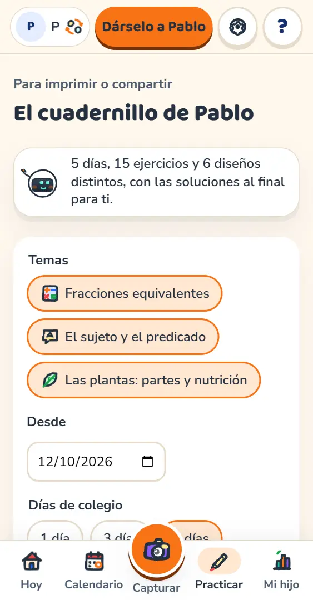
Tu hijo ve su espacio, con el estilo que le toca, sin notas ni números.
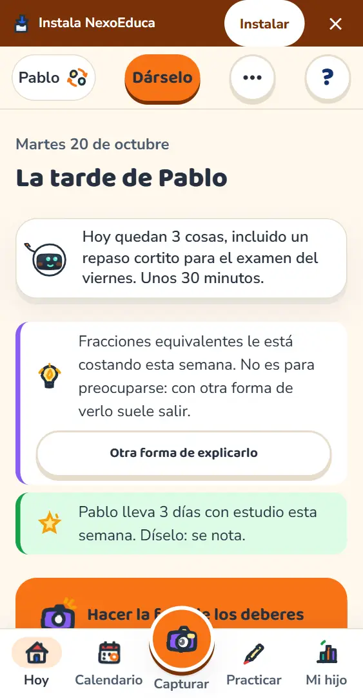
Si tu hijo va a clases particulares, el profe puede ver lo que ha trabajado. Solo si tú se lo abres.
Por defecto nadie ve nada de tu hijo. El profe ve lo trabajado y cómo le salió, nunca tus notas privadas. Cada niño tiene un solo profe: para pasar a otro, usa «Cambiar de profe».
Para que el móvil te avise cuando una ficha esté lista, cuando tus hijos terminen o la víspera de un examen.
Nunca de 22:00 a 8:00, solo a ti (nunca a tus hijos) y solo si tú los activas. En iPhone y iPad hace falta tener la app instalada.
«Menú», arriba a la derecha, es el mismo en todas las pantallas. Dentro, «Configuración» tiene todo lo que se puede cambiar.
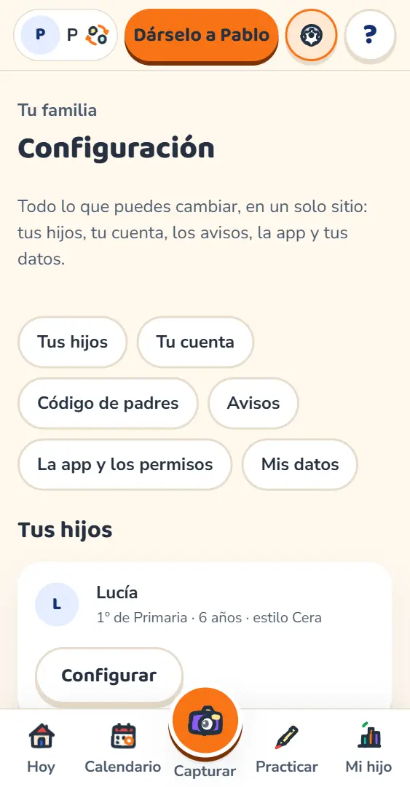
Tu espacio es para revisar fichas, ver a tus alumnos y preparar material. De un niño solo ves lo que su familia te abre.
Con tu correo y los cursos y las materias que das.
¿Quieres verlo antes? «Probar como profe de ejemplo» te deja elegir entre dos profes inventados.
«Hoy» es tu página de inicio: las fichas que esperan en tu mesa, tus Nexipuntos del mes y tu perfil de revisor.
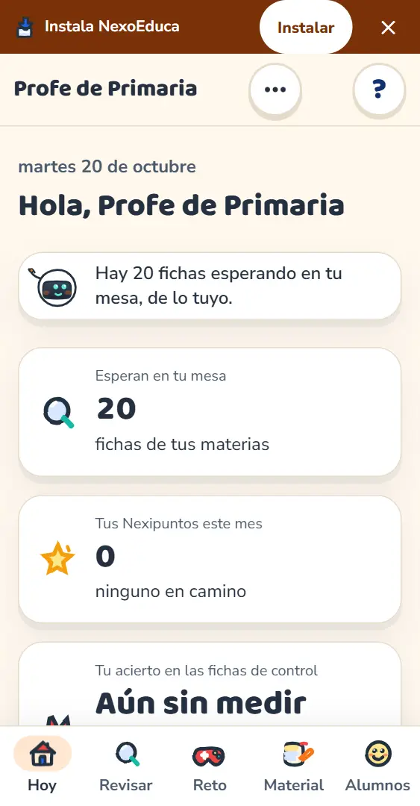
Tu código de profe está en «Menú» (arriba a la derecha) y luego «Configuración», con su QR. Se lo das a la familia de un alumno y ella decide.
Ves cómo le salió (bien, casi u otro día), no las notas del 1 al 10, que son solo de los padres. La familia puede cerrarlo cuando quiera.
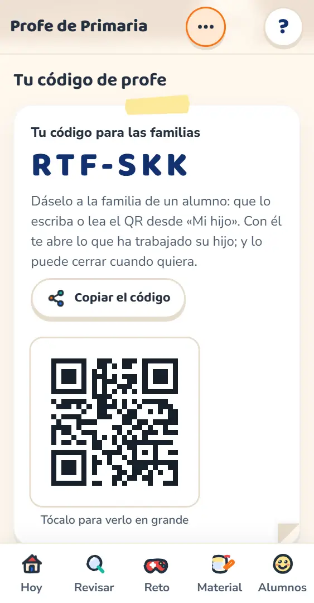
Un cuadernillo en papel para cada alumno: portada, una hoja por día y las soluciones.
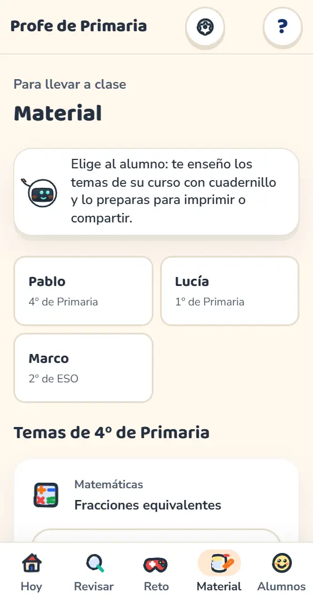
Revisar fichas ayuda a que lo que estudian los niños esté bien, y te da Nexipuntos. Con 500 puntos canjeas un mes gratis del plan Familia.
500 Nexipuntos son un mes gratis del plan Familia, como mucho uno cada mes. Los puntos no se pueden pasar a otra persona. Para usarlos, confirma antes tu correo.
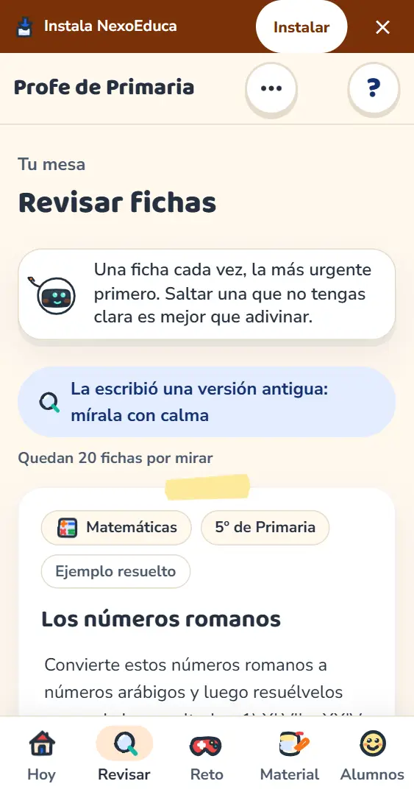
Todo con detalle en la política de privacidad de la web. Política de privacidad.
Escríbenos a hola@nexoeduca.app si algo no te sale o tienes una duda. Para tus datos y tus derechos, a privacidad@nexoeduca.app. Y en cualquier pantalla de la app, el botón ? te explica qué hace cada cosa.
¿Quieres el detalle? El manual completo cuenta la app pantalla a pantalla, y la guía corta para padres es la versión de una página.